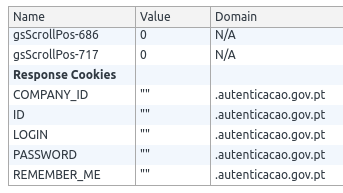

- Part 1 - The Weak Security Of The Portuguese Government’s Authentication System
- Part 2 - Chave Móvel Digital Multiple XSS Vulnerabilites
- Part 3 - Chave Móvel Digital Phone Number Leakage
- Part 4 - Chave Móvel Digital Log Out Not Working
Introduction
In this blog post I will show you that the “Log Out” button does not actually log the user out.
The Log Out Button Does Not Log You Out
If you click on “Sair”, which translates to “Log Out” you’re not actually logged out. It doesn’t matter if you try to login straight away, try to login in a new tab or try to login in a new window. The only way to actually log out is to close the browser and open it again.
The video below demonstrates the issue in action.
I’ve tested this in Google Chrome on Android and the problem was present there too. This is an issue. Let’s say that the user logs on a device that’s not his. After he’s finished with his tasks he clicks on “Log Out”, thinking that his session has been terminated. This means that the attacker can simply open the website, click on “Log In” and obtain access to the victim’s account.
A little bit of exploring reveled the problem. The only think that
clicking “Log Out” does is redirecting the user’s browser to
https://www.autenticacao.gov.pt/c/portal/logout. This page, in turn,
redirects the user back to the home page and sets some
cookies to an empty string, namely COMPANY_ID, ID, LOGIN, PASSWORD and
REMEMBER ME. I’m not sure what they are, since I haven’t seen them
used anywhere else on the site. I assume it’s some code that was ported
for somewhere, but was never adjusted to a different authentication
mechanism (I just hope they weren’t storing the password in plain text
there).
|  |
What the page fails to do, is clean the ASPXAUTH and ASP.Net_SessionId
cookies. In ASP.NET ASPXAUTH is a cookie used to identity if the user is
authenticated and the ASP.Net_SessionId is a cookie used to identify the
user’s session on the server.
Those cookie’s expiration date is not set, which means that they will have the life time of a session cookie, meaning that they will get removed once the client is shut down. This explains why closing and opening the browser again actually logs the user out.
The solution to this problem is to simply clear the ASPXAUTH and ASP.Net_SessionId on the log out page.
Conclusion
In this blog post I demonstrated that the “Log Out” button does not actually log the user out, since it fails to clean the authentication cookie. This opens a window to unauthorized account access.
This blog post ends the series of blog posts related to the security
weaknesses and vulnerabilities found in the Portuguese government’s
authentication system autenticacao.gov.pt and Chave Móvel Digital.
The issues described throughout these blog posts were not a result of a
thorough analysis, but rather what I found in about 30 minutes.
This leads me to believe that a more detailed study of the system’s
security is likely to reveal many more problems.
I hope that the described issues will be fixed very soon, since they put millions of Portuguese citizens at risk. The agency responsible for these systems should take security more seriously and not as an afterthought.